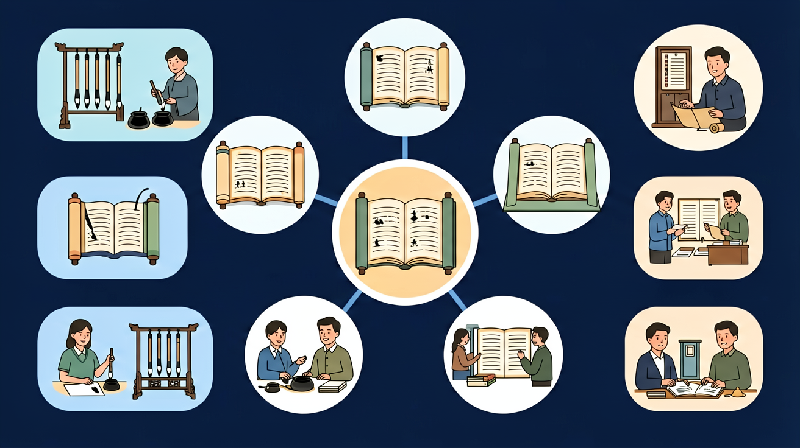

🤖 AI 多模态互动区
把你的问题告诉 AI，或上传图片让 AI 帮你分析
请输入一个句子，AI将帮你判断使用了什么修辞手法，并解释理由
点击复制此提示词 →
📎
点击或拖拽图片到这里
🎯 能说出比喻和拟人的基本定义及结构
🎯 能判断例句中是否包含比喻或拟人手法
🎯 能分析比喻/拟人在具体语境中的表达效果
❓ 为什么老师说'月亮像香蕉'不算好比喻？
❓ 拟人就是把东西当人写吗？有没有更高级的用法？
❓ 考试总让我'分析表达效果'，到底该怎么分析啊？
学完这一课，这些问题你都能自信地回答。
测一测，帮助我们了解你的基础（不计入成绩）
题1：「弯弯的月亮像小船」，这句话用了什么修辞手法？
题2：「花儿笑了，小鸟唱起了歌」，这句话用了什么修辞手法？
💡 无论答对答错，继续学习都会有收获！
预计用时 18 分钟 · 最多获得 12 ⭐

你已经知道文章里有各种各样的句子
遇到比喻、拟人、排比等修辞手法时，分不清楚，答题容易出错
今天学习最常用的六种修辞手法：比喻、拟人、排比、夸张、设问、反问
记录3处社区环境中的比喻/拟人现象
比喻三要素：本体、喻体、比喻词；拟人两要素：物+人的专属特征
比喻重在'相似性'，拟人重在'人格化'
比喻可以换成明喻/暗喻/借喻，拟人不能加'像'字
广告语'牛奶丝般顺滑'是比喻，'小草偷偷探出头'是拟人
用拟人手法给校园雕塑写解说词
先独立作答，再点选项查看对错与错因。
文中'叶子像蝴蝶一样飞舞'运用了什么修辞？
下列哪项与'叶子蹭过脸颊打招呼'修辞手法相同？
比喻和拟人的根本区别在于：
完成拟人句：春雨____地滋润着大地。（填动词）
答案：温柔
需选用符合人性特征的动词
比喻三要素是本体、喻体和____词
答案：比喻
如'像''似''如'等连接词
和前测对比，看看你进步了多少！
题1：「他好像来过这里」，这句话是比喻句吗？
题2：「我真的太喜欢这本书了，不知看了多少遍，书都快被翻烂了」，用了什么修辞手法？
❌ 常见错误
「他好像来过这里」是比喻句（有「好像」就是比喻）
✅ 正确做法
这不是比喻句，只是表示猜测。比喻的条件：①本体和喻体必须是两种不同事物②两者有相似点
🩺 错因诊断：判断比喻句不能只看有没有「像」「好像」。必须同时满足：①有两种不同事物②两者有相似点③是比较不是猜测
✅ 有'如'字是对比，属于比喻
💡 混淆动作描写与人格化特征
✅ 约定俗成的称呼（如'太阳公公'）不算修辞手法
💡 未区分固定表达与主动修辞
💡 类比记忆：把今天的知识和你已经知道的事物联系起来，记得更牢！
把你的问题告诉 AI，或上传图片让 AI 帮你分析
点击或拖拽图片到这里
回忆：今天学了哪些关键词和规则？试着说出来。
用自己的话解释今天学的核心概念，不看书能说清楚吗？
用今天的知识解决一个实际问题，或写一个新例子。
把今天的知识与已有知识联系起来：有什么共同点？有什么区别？能不能自己创造一道新题？